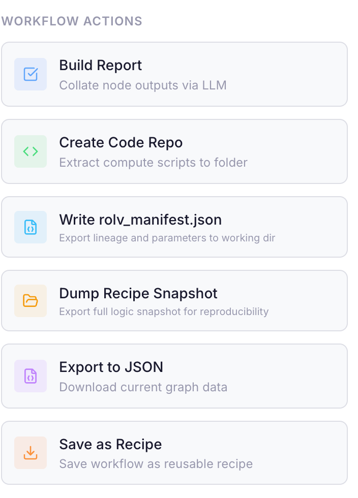

Recipes
Recommended Recipe Workflow
Use two stages to build reliable recipes in rolv:
- Build and test in Graph View: Create a DAG pipeline, set inputs and outputs, and verify execution locally or over SSH. Enable Auto-Correct Failures and Strict Fact-Checking in Graph Actions while testing.
- Export as a Recipe: Open Graph Actions (sliders icon) and click Save as Recipe. rolv packages your graph structure, scripts, environment specs, and non-path input parameters into a bundle.

- Refine in Recipe Designer: Click Open Designer to edit
recipe.md, add troubleshooting notes, configureenv/files, and enhance node descriptions for search. - Submit to Cloud Library: Click Submit in the designer header to publish your recipe for review.
Recipe Library and Cloud Library
Click Recipes in the sidebar to open the Recipe Library:
- Local Library: Browse, run, edit, duplicate, export, or delete recipes saved on your computer.
- Cloud Library: Search verified pipelines and node blueprints. Free accounts can browse recipes. Academic accounts can download recipes using 5 active local recipe slots.
When you use a Cloud Library recipe that is not yet on disk, rolv downloads it automatically.
Recipe Properties
Types
| Type | Description |
|---|---|
| User | Created on your account. |
| Team | Shared inside an organization. |
| Validated | Reviewed and approved for the Cloud Library. |
Statuses
| Status | Meaning |
|---|---|
| Draft | Work in progress. |
| Saved | Saved locally. |
| Submitted | Uploaded for Cloud Library review. |
| Approved | Published in the Cloud Library. |
| Quarantined | Hidden from search after security flags or repeated user reports. |
Categories (Cloud Library)
| Category | Meaning |
|---|---|
| Core | Maintained by the rolv team. |
| Community | Contributed by community users. |
Running a Recipe
From the Recipe Library:
- Select a recipe and click Run Recipe.
- Choose a working directory.
- Enter your input files or parameters on the Data Input node, then click Run Workflow.
From Chat View:
| Action | Result |
|---|---|
| Click Use Recipe on a recipe card | Starts a new graph session with that recipe. |
Type the recipe name, run it, yes, or do 2 in chat |
Loads the recipe into the current session and replaces its graph. |
Cloud-linked recipes display a Cloud vN badge. Local-only recipes display Local only. Edited cloud forks display Local changes not submitted.
Importing Pipelines
Import external workflows from the Recipe Library toolbar:
| Source | Behavior |
|---|---|
| Folder | Imports a rolv recipe folder as-is, or compiles a folder of scripts or a Snakemake pipeline into graph nodes. |
| Snakemake | Converts a Snakefile or Snakemake folder into graph nodes. Large rewrites spend many tokens and reject pipelines that cannot be converted safely. |
| Git / Repository | Imports one or more rolv recipes from GitHub (root, /tree, or /blob subfolders), GitLab (cloud or self-hosted), Bitbucket, or direct .tar.gz/.tgz archives. Re-syncing uses HTTP ETag caching to update existing recipes without creating duplicates. |
A progress chip shows scanning, code extraction, DAG construction, and validation steps in real time.
Recipe Designer
Click Open Designer on any recipe to edit it across four tabs.
Recipe Tab
Edit recipe.md, the human-readable guide for your pipeline. Switch between Edit and Preview modes.
Syncing Documentation with Your Pipeline
Click Sync docs with pipeline to update recipe.md from your current nodes, scripts, and inputs:
- Click Sync docs with pipeline in the
recipe.mdheader. - Add optional instructions (for example,
Focus on explaining input parameters), then click Generate Suggestions.

- Select which updated sections to apply using the checklist and side-by-side diff preview. Existing YAML frontmatter metadata and custom sections (such as References) stay preserved.
- Click Apply Selected to update your draft before saving.

Workflow Tab
Inspect and edit each node in the recipe graph:
- Compute / Research nodes: Edit label, kind (
scriptfor a compute node oragentfor a research node), Touch-last / protected state, research mode (Interpret / simple agent,Literature review,Full), structured output fields, ForEach batch iteration (default 20, max 100 items), Expects / Produces contracts, and template code. - Enhance description: Generate a dense summary on a node to improve semantic search matching.
- Data Input / Data Output nodes: Store input variable names, descriptions, safe defaults (local paths cleared), optional test-data generator scripts, and output ledger entries.
Environment Tab
Edit package dependencies under env/ (python-requirements.txt, r-packages.txt, system-tools.txt) and troubleshooting.md.
- Automatic Python package mapping: rolv maps imports such as
cv2(opencv-python) andsklearn(scikit-learn), resolves Bioconductor/CRAN packages for R, and falls back topipwhen Conda lacks a Python package. - Save as Recipe fills known package versions automatically while skipping Python standard library and R base packages.
Changes Tab
Review line-by-line differences since the last saved version.
Publishing, Security Checks, and Quarantine
- Click Submit in the Recipe Designer header to upload your recipe to the Cloud Library.
- Submitting updates to an existing cloud listing updates that listing rather than creating a duplicate. If the original cloud listing no longer exists, rolv creates a new listing.
- Cloud submissions and non-admin content updates run through an automated Security Risk Scanner. Recipes flagged as high risk (for example, destructive shell commands or unsafe remote downloads) are set to Quarantined and removed from search results until reviewed.
- For cloud-sourced recipes, click ⋮ → Report this recipe to flag harmful or broken recipes. Repeated reports also quarantine a recipe automatically.
Cloud Updates
When a newer version of a cloud-linked recipe exists, rolv shows an Update Available badge:
| Action | Behavior |
|---|---|
| Keep My Version | Keeps local files and updates the tracked version number. |
| Snooze 7 days | Hides update prompts for 7 days. |
| Clean Overwrite | Replaces local files with the latest cloud version (creates a restore point first; Academic accounts). |
Using Recipes from External Agents (MCP)
After you connect an external coding agent in Settings → Execution Tools → MCP Server, the agent receives six tools and one specification resource (rolv://spec/recipe-format):
| Tool | Purpose |
|---|---|
search_recipes |
Search your local recipes (folders and rolv Desktop vault.db) and the Cloud Recipe Library (Academic or Pro). |
inspect_recipe |
Read recipe.md, input.json defaults, expected outputs, and node details (including touch_last protection flags). |
get_recipe_spec |
Return the canonical rolv Recipe Package specification so agents author compliant recipes. |
validate_recipe |
Check frontmatter, DAG structure, safety rules, personal-path hygiene, secrets, and env/ dependencies. |
patch_recipe_node |
Update one node script after compliance checks pass. Blocks touch_last nodes unless force: true is set, and keeps recipe.md unchanged. |
run_recipe |
Materialize the recipe into working_dir, populate input.json (or run test_setup when use_test_data: true), execute the DAG, stream node logs, and return output.json plus *_report.md paths. |
After an external agent creates or patches a recipe, open the recipe in rolv Desktop to inspect visual diffs, run Sync docs with pipeline, or submit updates to the Cloud Library.
Recipe Sharing
When AI improves a cloud-origin recipe locally, rolv can submit those changes upstream. Set this behavior in Settings:
- Ask every time: Ask before submitting changes.
- Never ask: Skip sharing prompts.
- Auto broadcast: Submit recipe improvements automatically.
Next: Reviews →